Feature — My Father: The Pride of an Exiled Torcedor, a House Named for a Father
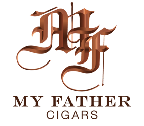
“The great house that evolved the Cuban tradition in Nicaragua” — as a description of My Father Cigars, it is hard to find higher praise. The founder is José “Don Pepín” García, a torcedor born in the small Cuban town of Báez who had been rolling cigars since the age of eleven. Exile after the age of fifty, a fresh start in a tiny Miami workshop — and then a single cigar, made by his son in secret as a gift to his father, became the very name of the company. Today the family runs a giant factory in Estelí and some twenty farms of its own, rolling roughly 24 million cigars a year: a major maker by any measure. And yet its substance is still made of Cuban-trained handwork and a family's story.
◆ Chapter 1 — The Cuban Years: A Man Born in a Factory
José García, the future “Don Pepín,” is said to have been born in October 1950 inside the cigar factory his grandparents ran in Báez, a small town in Cuba's Villa Clara Province (per Cigar Journal's profile of him). The García family had kept a factory in Báez since the 1930s, living by tobacco for generations. In its day, Báez is said to have had as many as thirteen privately run factories.
Then, early on the morning of March 9, 1963, that everyday life ended. Soldiers appeared before his grandmother and demanded the factory keys — to which she replied, so the story goes, “You don't need keys. It's open.” From that day, the factory was folded into the state. It is Pepín's own memory of his family's fall, told to Cigar Aficionado in 2025.
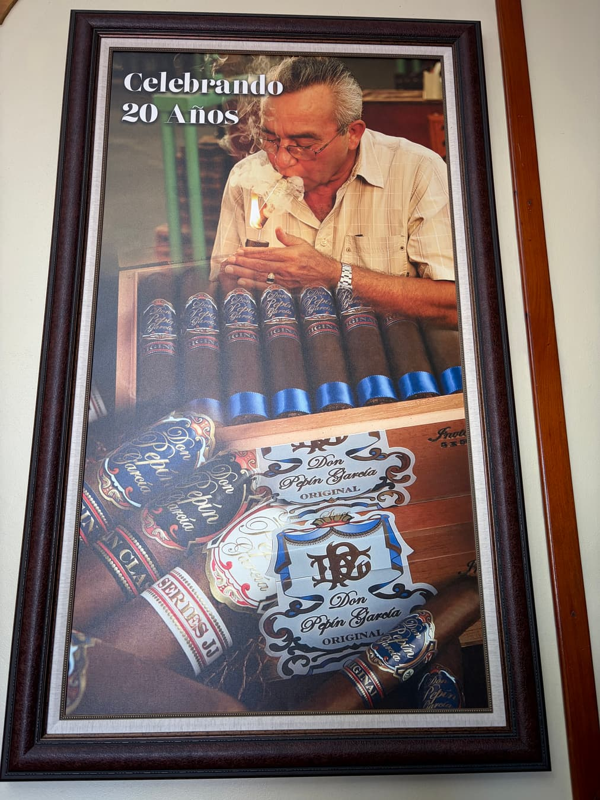
Pepín's own apprenticeship proceeded in the era of state control. In December 1961, at the age of eleven, he entered his uncle's factory, and from 1963 he rolled on at the Félix Rodríguez export factory in Báez. In time he climbed to “Class 8 (Master),” the highest rank for a Cuban roller, and was invited to factories around the country as an instructor. “At the model factory I was called ‘maestro de maestros’ — the teacher of teachers. I was teaching the people who teach,” he recalls (Cigar Aficionado, 2025). The productivity legend of this era — 320 Julietas (7 × 48) rolled in four hours — also belongs to these years.
In his Cuban years, the cigars that passed through his hands were the island's banner brands: Montecristo, Romeo y Julieta, Cohiba. His son Jaime also entered the agricultural side in Cuba at sixteen or seventeen and rose to head of quality control at a factory. “It was I who longed most strongly to leave Cuba,” Jaime himself later said — the push for exile came from the son.
◆ Chapter 2 — The American Years: The Man Who Made His Name in Miami
In 2001, Pepín and Jaime left Cuba. They crossed first to Nicaragua and worked under the leaf grower Eduardo Fernandez (later of Aganorsa). There, Pepín's eyes were opened to the power of Nicaraguan leaf. “Estelí is like Las Villas, Jalapa like Pinar del Río, Condega like Havana. Put them together, and it is exactly ‘Cuba’” — his famous words (Cigar Aficionado, 2007). From there the family passed through Mexico into the United States, joining daughter Janny, who had crossed earlier, in 1997.
Aganorsa Leaf is a leaf powerhouse built in Nicaragua by Eduardo Fernandez, a Cuban-born businessman. From the late 1990s he spread farms across Jalapa, Estelí and Condega, growing Cuban-seed Corojo 99 and Criollo 98 and supplying leaf to many makers, while his own factory rolls the lines of the former Casa Fernandez (now under the Aganorsa name). Many boutique brands that trade on the character of their leaf — Warped and Illusione among them — are known to use Aganorsa leaf. The days the García father and son spent working under Fernandez just after their exile were their first school in Nicaraguan tobacco.
In 2003, the family opened a small chinchal — a little workshop — on Calle Ocho (Eighth Street) in Miami's Little Havana. Its name was “El Rey de los Habanos” — “King of the Habanos.” A small storefront with a grand sign: that was the look of the place at the time. There were about a dozen rollers. Fernandez backed the venture with investment and leaf supply, and production began: the house brands Don Pepín García (the Blue Label) and Vegas Cubanas, alongside contract work for outside brands.
Into this tiny workshop walked a young man named Pete Johnson, who was working at a cigar shop in Los Angeles. He was looking for someone to make a new brand named after his own tattoos: Tatuaje. Johnson handed Pepín a beloved Cuban cigar and asked him, it is said, “Make me a cigar like this.” So what was that one cigar? In his first interview, in 2007 (Cigar Press), Johnson himself said only that “there was a box of perfectly burning Cuban cigars, and I handed him one and said, ‘Make this for me’” — he did not name it. A Tatuaje research compendium (an enthusiast-compiled study, “Pete Johnson Cigars”), however, identifies that cigar as a well-aged Flor de Cano Casadores. Flor de Cano is a long-established Cuban brand, and Johnson's attachment to it has also been reported — he planned a limited edition modeled on its short-lived Short Churchill (Halfwheel). As Johnson has never made it public himself, it cannot be stated as fact; but it is the strongest candidate at present. The brown label Pepín rolled in answer (the Selección de Cazador) astonished American aficionados with a roll and a flavor that recalled pre-embargo Cuba.
The house Blue Label was also released in that same year, 2003, so “the first cigar” belongs to the same moment. But Cigar Aficionado, in its 2025 feature, wrote it plainly: “It was after the family began producing Tatuaje that the world took notice of them.” Jaime himself says: “Tatuaje was very, very important. Pete started a new generation.” The answer, then, is this — the turning point that sold their name was someone else's brand: Tatuaje. That reputation brought a flood of “please roll for us” requests, and would-be clients such as Padilla and EO Brands formed a queue.

The little workshop could not keep up with orders, and in 2006 the family opened the Tabacalera Cubana factory in Estelí, Nicaragua. Then, in 2009, a vast complex — “My Father Cigars,” taking in everything from leaf processing to box making — was completed. The Miami workshop also moved, to Doral, where the headquarters now sits, and a small team there still rolls the brown labels and Blue Labels. The fame seized in the “American years” became the springboard to a major Nicaraguan manufacturer.
◆ Chapter 3 — The Name “My Father”: Offerings Exchanged Between Father and Son
In 2008, his son Jaime built a blend in secret from his father. The cigar he made in gratitude to his father bore the name “My Father.” It was an all-out effort: Nicaraguan leaf bound under a bright Ecuadorian Habano Rosado wrapper. In time, that name became the name of the new Estelí factory completed in 2009 — and of the company itself. A son's gift became the family banner.

What is delightful is the “return gift” the father made the following year. Pepín created a cigar dedicated to his own father, José García (born in 1922): Le Bijou 1922. “Le Bijou” is French for “the jewel.” From son to father, and from father to his father — the story of the name of “the house named for a father” is woven from offerings crossing two generations (more in the side story in Chapter 4).
Let us introduce the family. The patriarch Pepín still walks the rolling floor almost daily, inspecting the work of his craftsmen's hands (Cigar Aficionado, 2025). Jaime is in charge on the ground at the factory and the farms; his work is to shut himself in the fermentation rooms and face the piles of leaf. His daughter Janny directs the sales and distribution network across the United States — and was also the family's pioneer, the first to cross to America. And the guide for Fine Cigars Club's reporting at the factory in January 2026 was Jandy García, of the younger generation. Three generations working under one roof — the headline Cigar Aficionado gave its 2025 feature was “Three Generations.”
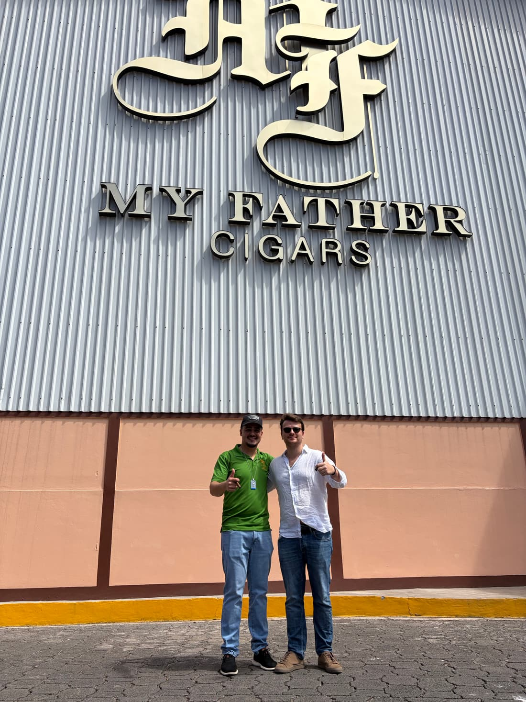
◆ Chapter 4 — The Signature Lines: Masterpieces and Their Stories
A hallmark of the García family's lines is how many of them make plain “whose cigar this is.” Here are the principal faces, with their stories.
Don Pepín García (Blue Label) — born in 2003, the house's very first release, together with the Miami opening. Wrapped in Nicaraguan Corojo 99, it is the origin of the “Pepín style,” with black pepper bursting from the first puff. Still rolled in Miami (Doral) today, it is a line like the family's original landscape.
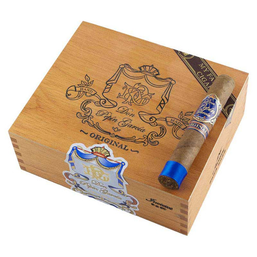
Serie JJ — released in 2005. The “JJ” in the name stands for the initials of Jaime and Janny, brother and sister, as Cigar Aficionado records. The origin is told more than one way, though — Halfwheel goes so far as to note that “the box bears the siblings' names.” In 2025 a 20th anniversary limited edition (said to be limited to 2,500 boxes) also appeared. It is another family line, named by a father for his children.
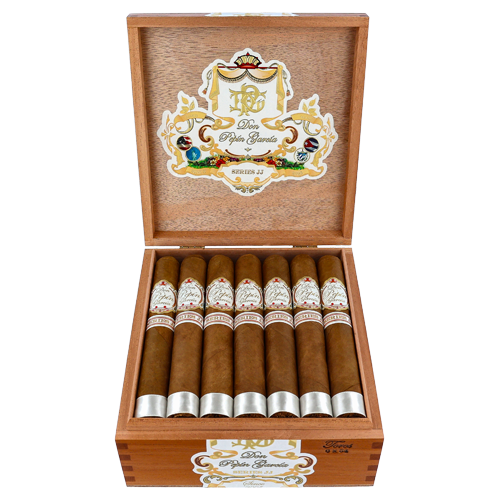
Flor de las Antillas — released in 2012. The standard-bearer that lifted the house's name to the world.
“Flor de las Antillas (Flower of the Antilles)” is itself a poetic name for Cuba, the largest island of the Antilles. The exiled family crowned its new work with the name of the homeland. The design is a thorough homage to Cuba, too: the band and box art use vintage artwork from the early twentieth century. Even the debut was done with flair. In March 2012, at the 91st anniversary party of the long-established retailer Federal Cigar, it was first served as an unbanded, nameless cigar (Cigar Aficionado and others). The leaf is a Nicaraguan puro starring a sun-grown wrapper from the family's own Las Marías farm (in the Namanjí district), and it was also My Father's first box-pressed line.
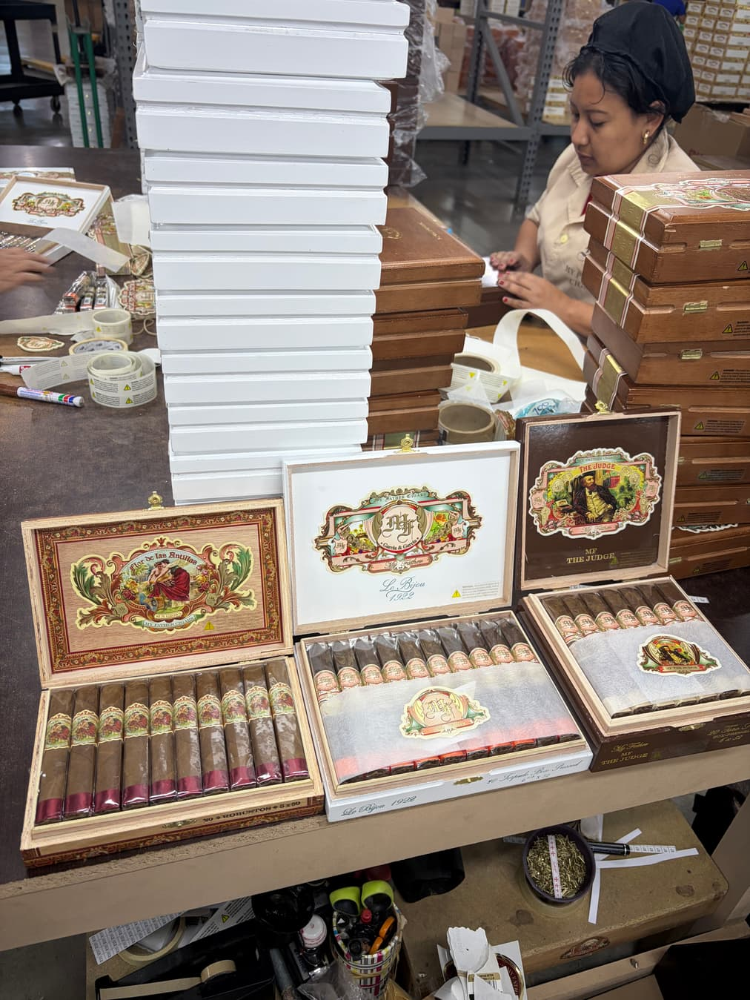
Le Bijou 1922 — released in 2009. The offering from father to grandfather, touched on in Chapter 3.
The year after his son Jaime gave him “My Father,” Pepín made a cigar dedicated to his own father, José (born in 1922). Its name: “Le Bijou (the Jewel) 1922.” It was finished as a blend a step more personal and a step stronger than the main My Father line — because of that private character, no doubt. A full-bodied cigar: Nicaraguan leaf from the family's own farms bound under a black Ecuadorian Habano Oscuro wrapper. In 2015 it went on to bring the house its second No. 1 of the year.
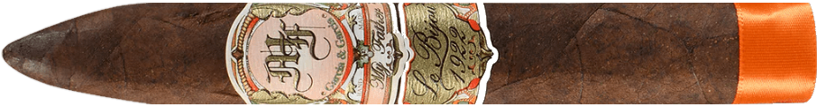
The Judge — released in 2016, one of the house's most powerful lines. Like Flor de las Antillas, its box uses vintage lithograph-style artwork (Cigar Aficionado). Under an Ecuadorian Sumatra wrapper lies leaf from the family's own farms in Jalapa, Estelí and Namanjí. With some 75% of it from Estelí, it is a cigar that tastes of the land itself.
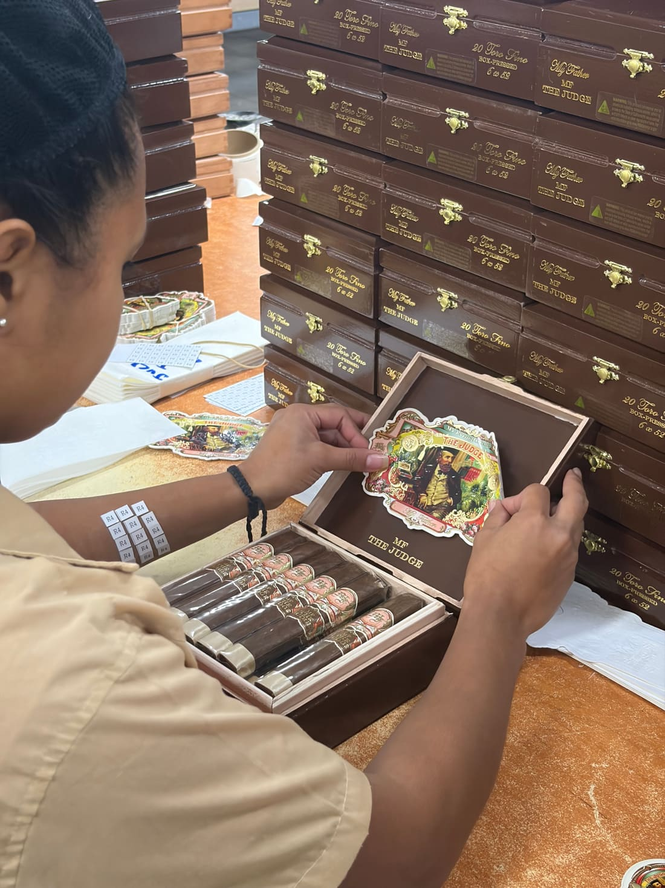
Jaime Garcia Reserva Especial — from 2010, the line bearing the name of the blender Jaime himself. Its signature is a dark Ecuadorian Connecticut Broadleaf wrapper — a cigar that showed a palate of a different generation from his father's.
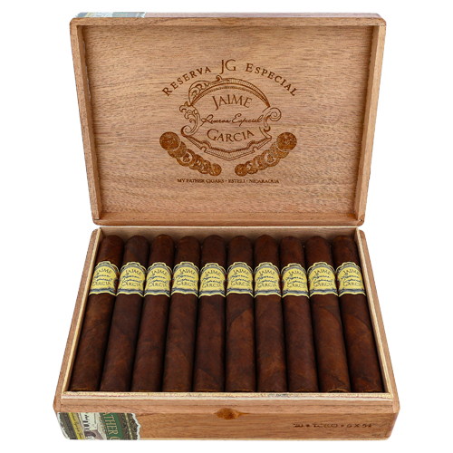
La Antigüedad — released in 2014. True to its name, meaning “the good old thing,” it is a cigar of classical bearing. An Ecuadorian Habano Rosado wrapper over Nicaraguan Criollo and Corojo.
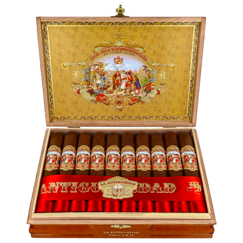
La Opulencia — released in 2018. It uses a Mexican San Andrés Rosado Oscuro wrapper, and is a popular line for a flavor in which sweetness and weight live together.
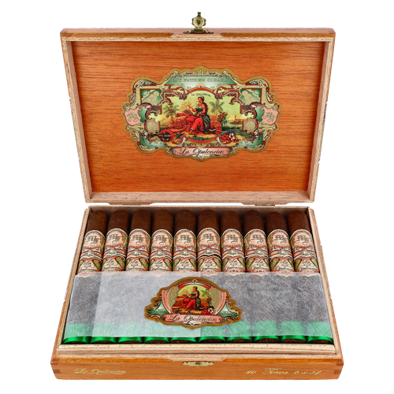
El Centurion — a line that first appeared in 2007 as a limited brand and became a regular line in 2013. True to its name, “the Centurion,” it is a strongly built blend.
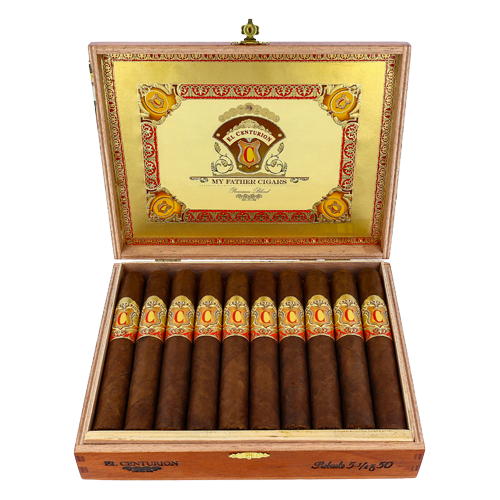
Tabacos Baez and Vegas Cubanas — Baez is the line named for Pepín's hometown. Vegas Cubanas was a house brand of the early Miami days, later revived. Both are lines that carve “the house's memory” into their names.
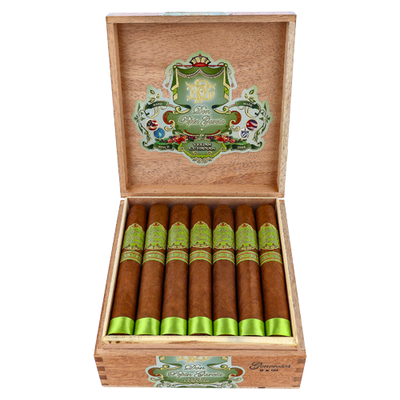
◆ Chapter 5 — The World's Verdict: The House That Took No. 1 Three Times
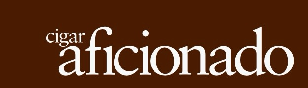
What fixed the García family's reputation was its record of winning Cigar Aficionado's “Cigar of the Year (No. 1)” three times. In 2012, the Flor de las Antillas Toro (96 points). In 2015, the Le Bijou 1922 Torpedo Box Pressed (97 points). And in 2024, The Judge Grand Robusto scored 98 points — among the highest scores in the magazine's history — to stand at a third summit. Three wins across two generations of father and son, and all with different lines: proof of depth in the blending bench.
The trait the specialist press's reviews return to, as the signature of the flavor, is the “Pepín spice” — black pepper bursting at the first puff. A flavor in which the crisp contours of the Cuban style live alongside the power of Nicaraguan leaf is credited with changing the very current of the American boutique cigar. In reviews by Halfwheel and other specialist media, mention of the precision of the roll and the uniformity of quality is all but a fixture. In 2025, Cigar Aficionado gave the family a major feature, introducing it as “one of Nicaragua's largest makers, rolling some 24 million cigars a year.” A reputation built not on gaudy advertising but on blind tastings and work on the floor — a lineage of substance, kin to Padrón.
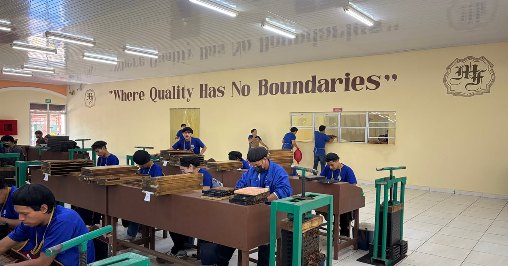
◆ Chapter 6 — Leaf, Land and Craft: On the Floor with the Torcedores
The family's self-sufficiency began with the first farm it bought in 2008. The name given to the 30-manzana (about 21-hectare) plot in Estelí was “La Estrella (the Star).” The family kept buying, and by 2011 it had built a structure in which it no longer needed to buy Nicaraguan leaf from outside (Cigar Aficionado). Today it holds some twenty farms across Estelí, Jalapa, Condega and Namanjí, and covers everything in-house — growing, fermentation, aging, rolling, and even box making. For part of its wrappers it also uses leaf from contract regions: Ecuadorian Habano and Sumatra seed, Mexican San Andrés, American Connecticut Broadleaf, and the like.
The Estelí factory, completed in 2009, is now a vast complex producing some 24 million cigars a year. On the rolling floor are some 600 employees in blue shirts, working as 300 rolling pairs (Cigar Aficionado, 2025). And yet the method remains Cuban handwork. The filler is bunched by entubado — the leaves rolled into tubes — and the cap is a triple cap. The “double binder,” using two binder leaves, is also known as a house practice. Pepín himself, walking the floor and inspecting the work, is said to be part of the factory's everyday scenery even now.
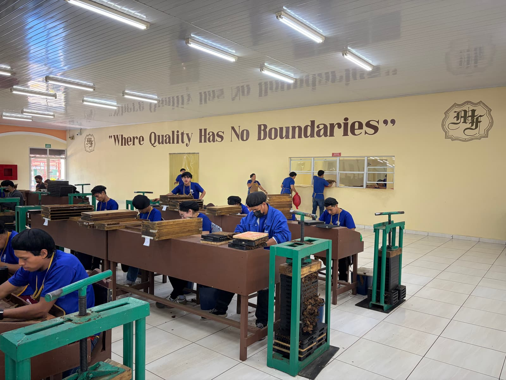
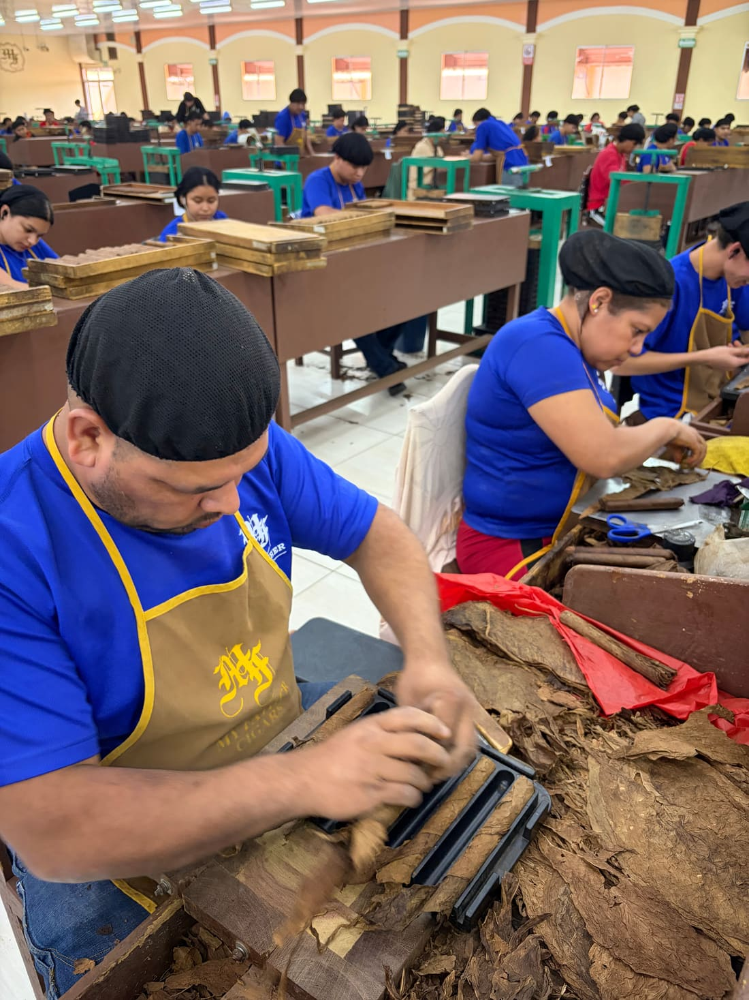
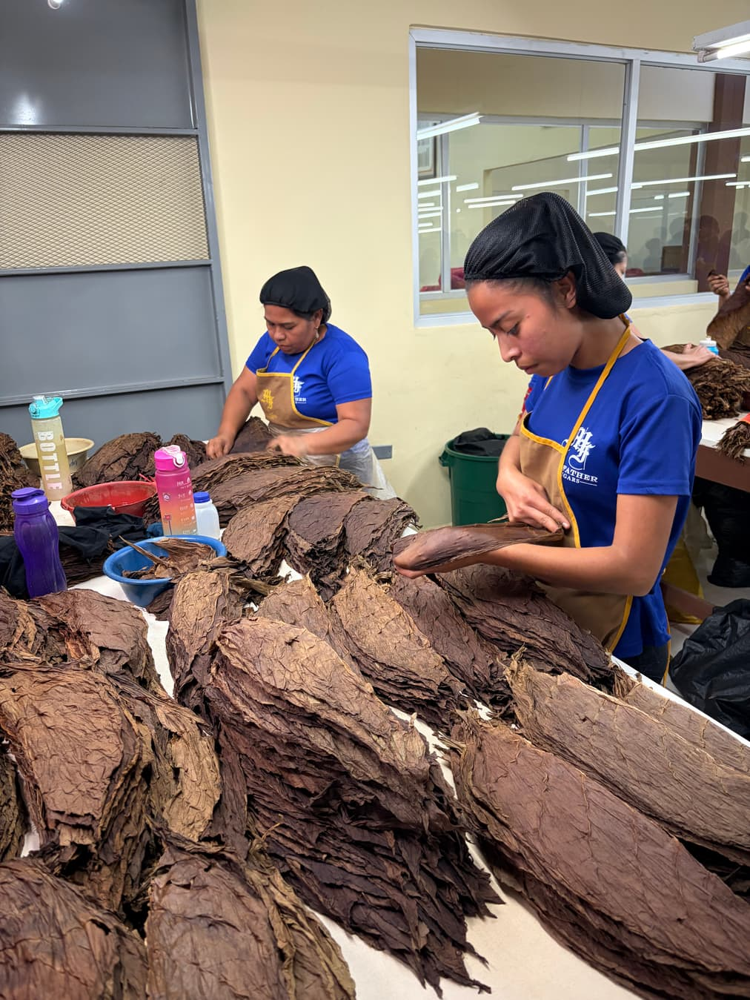
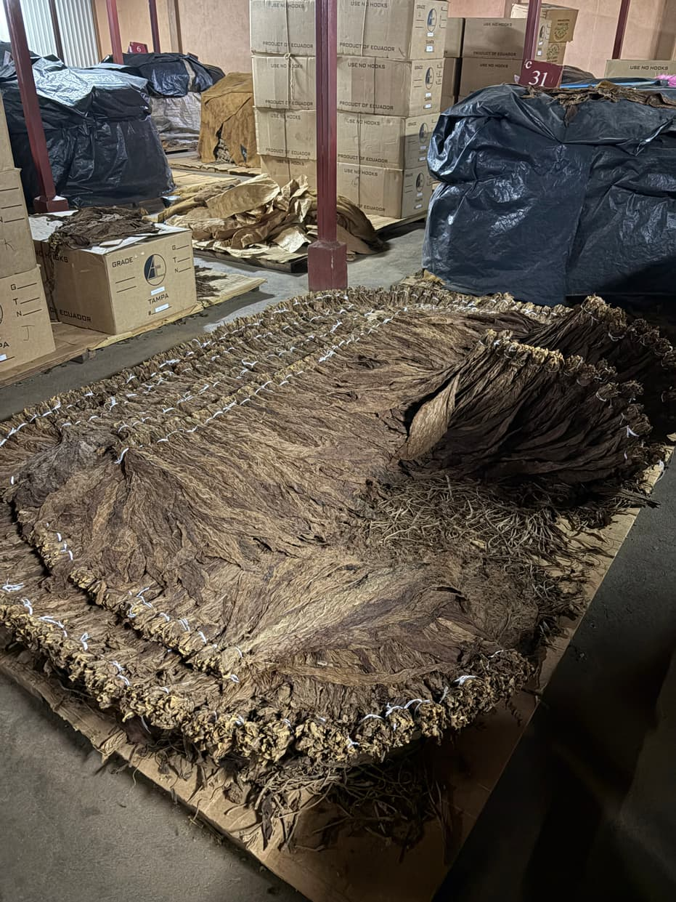
Mechanize the laborious work of deveining — stripping the central vein from the leaf — and a factory can save enormous labor. And yet Pepín, it is said, sold off the deveining machine he had brought in on a trial basis (Holt's company history). The reason is simple: a single machine replaces “sixty people's livelihoods.” He chose, over efficiency, to protect the lives of the people who work at the factory — an anecdote that shows the values of the craftsman's world.
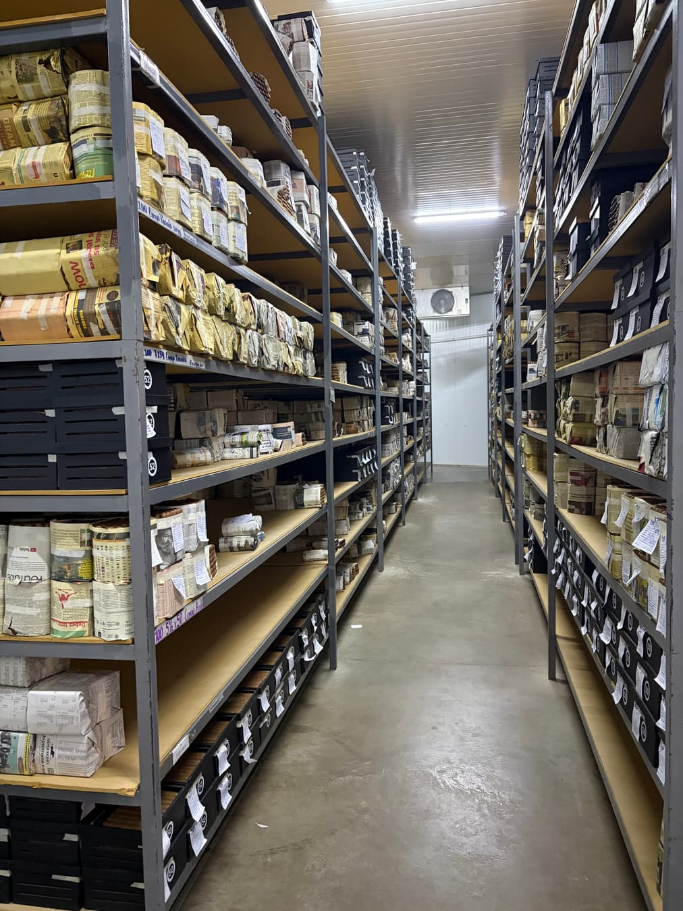
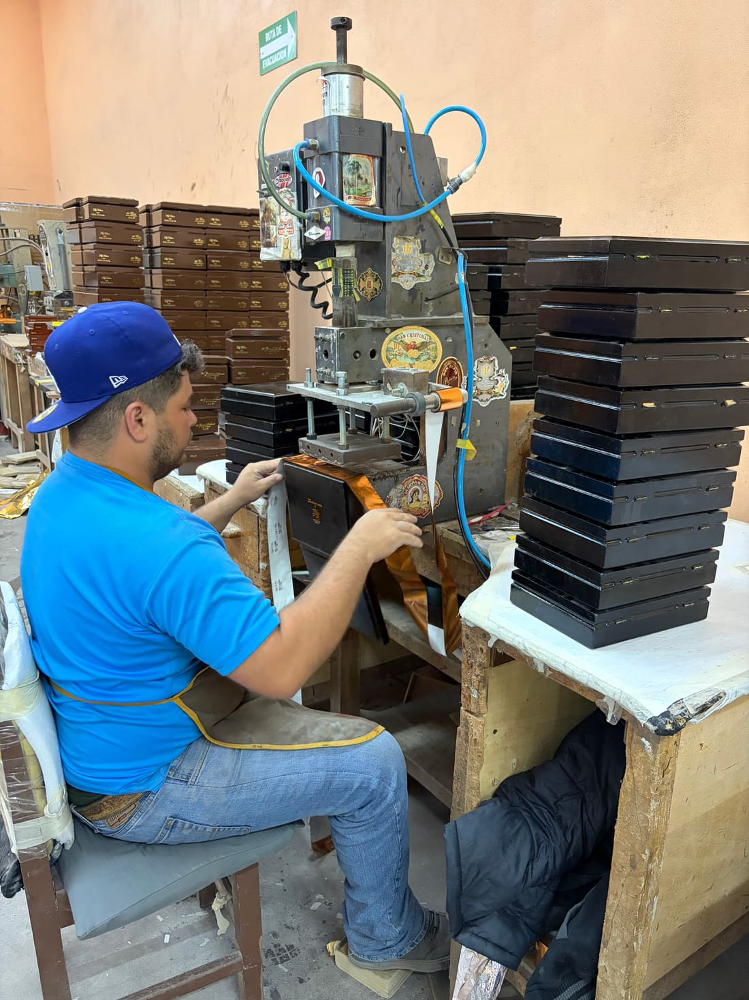
The family is also reported to have a factory in Honduras (Fine Cigars Club). And yet the heart is Estelí. The factory of the man who had been rolling since he was eleven is a place that transplanted the air of a Cuban rolling floor, just as it was, to Nicaragua.
Chapter 7 — The Makers Bound to the García Family: A Lineage of Contract Work and Collaboration
Of the production of My Father's factory, some 28% is rolled for other companies' brands (Cigar Aficionado, 2025). The family's history is, just as it is, a history of the American boutique cigar's web of ties.
Tatuaje (Pete Johnson) — as told in Chapter 2, the first client, who became the turning point of their fame. The core lines are still rolled at the García family's factories (the brown label in Miami), and Johnson's sister brand L'Atelier is also born here. Cigar Journal, moreover, records that Johnson's partner is Janny García. The tie of work has become a tie of family, as well.
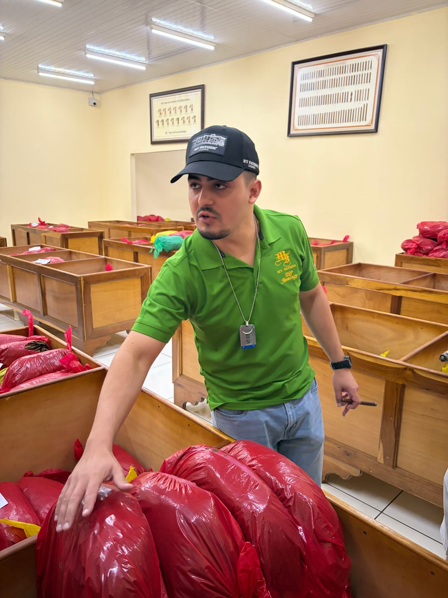
Ashton — in the mid-2000s, the Levins, father and son, of the long-established Ashton, searched far and wide for a new maker and arrived at the García family. In 2007 their first joint work, San Cristobal, debuted. Pepín's blend breathed life into a trademark Ashton had been holding since the 1980s. At the new Estelí factory, San Cristobal is said to have been “the first official client” (Holt's). The revived old brand La Aroma de Cuba also later passed into the García family's hands.
In fact, the first choice had been Fuente. The Levin family had held the San Cristobal trademark since the 1980s and, naturally, approached Tabacalera A. Fuente, which made all of Ashton's cigars. But Fuente at the time had no room to spare a production slot for a single new brand. Sathya Levin was candid about it at the time: “Our relationship with Fuente has not changed at all. They are partners, and dear friends. It is just that production capacity had reached its limit. Carlito gave this project his blessing.”
The search for a maker went through half a dozen or so factories before arriving at the small Miami workshop, El Rey de los Habanos. The deciding factor was the shock father and son felt in 2005, when they smoked the Don Pepín Blue Label. “The moment we first met him, we knew it was him.” And asked why Pepín, the answer is frank: “Because we believed that he now makes the finest cigars in the world.”
That trust later spread to the transfer of the Honduran-made La Aroma de Cuba to Estelí (2009). It was not a switch born of a falling-out. Ashton proper is still made by Fuente, and the García family carries the Nicaraguan side — it was the moment the Levin family's “two-track” arrangement was born. (Source: Cigar Aficionado's 2007 feature; Sathya Levin's statements at the time)
The tie to Padilla — and the parting — the flagship “Miami 8&11” of Ernesto Padilla, whose father was a Cuban poet, takes its name from the corner of 8th Street and 11th Avenue — the address of El Rey de los Habanos. Released in 2005, its Salomones are said to have been rolled by Pepín himself (Halfwheel). It was a honeymoon of high praise — but in 2008 the contract was not renewed, and the two parted ways. Demand from other brands had grown too large, it is said; or the relationship had cooled — both are told. Padilla opened a factory of its own and moved its production from place to place thereafter. That the name 8&11 forever carves the address of Pepín's workshop into it is the charm of this tie.
EO Brands / 601, and Espinosa's independence — the “601,” released in 2006 by Erik Espinosa and Eddie Ortega's EO Brands, was one of the first new lines born at the García family's Nicaraguan factory (Cigar Journal). When EO dissolved in 2012, Espinosa took 601 with him, went independent, and opened his own factory, La Zona, in Estelí. A maker “raised by the García factory” had come to hold a factory of his own in the same town. As an aside, today's 601 is rolled at AJ Fernandez's factory (Halfwheel) — the threads of these ties cross further still.
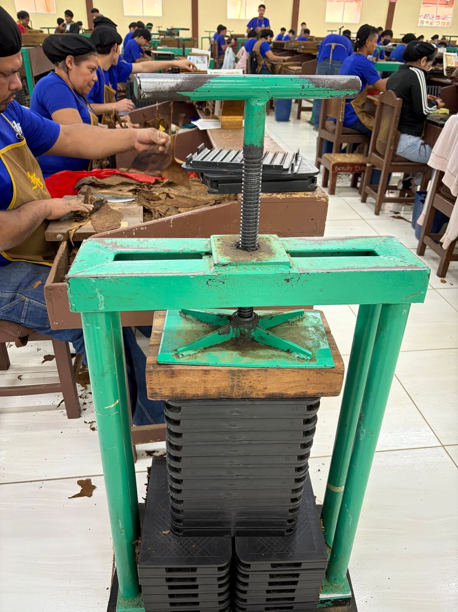
Seen in the flesh — other houses' banners — contract-produced and blend-shared cigars still line the shop shelves today. Ashton's San Cristobal and La Aroma de Cuba are made at the Estelí factory to the García family's blends. Crowned Heads' annual limited Las Calaveras is also My Father-made. Espinosa's 601 is a “graduate” — born at the García factory and now moved to a rival's.
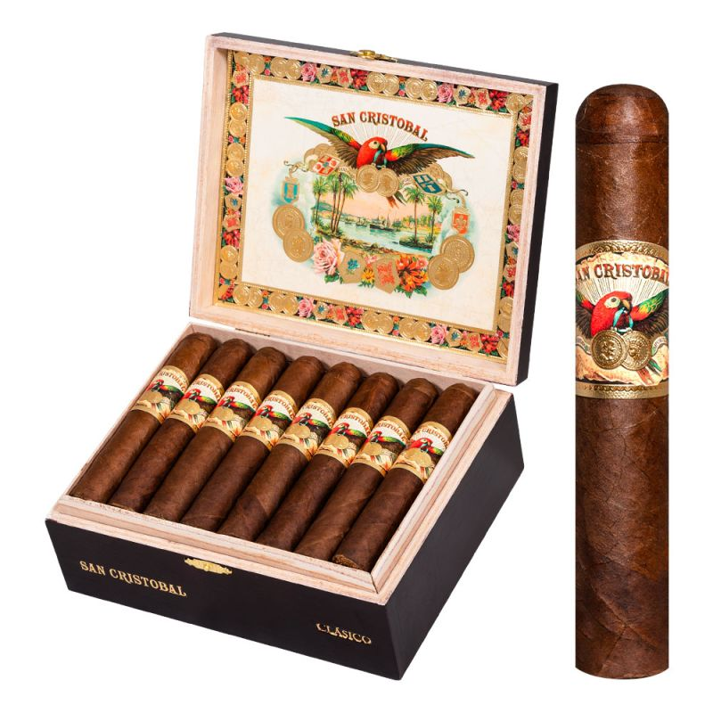
Hear “San Cristobal,” and a cigar lover first thinks of Cuba's San Cristóbal de La Habana. It is a brand Habanos launched in 1999, its name taken from Havana's original city name (1519), its sizes named for the fortresses that guarded Havana. And yet there was a trademark head start that lets the Ashton version sell openly in America.
In the 1980s, Robert Levin, driving through the Dominican countryside, noticed “San Cristobal” place-name signs here and there (the Dominican Republic also has a town of that name), took a liking to it, and acquired the U.S. trademark. What is more, Cigar Aficionado reports that the U.S. registration came two years earlier than the Cuban side's 1999 trademark, noting that “it is unusual for the Cuban brand to be the later arrival.”
The division of territory continues today: outside the United States, the Ashton version is sold under the name “Paradiso,” because outside the U.S. the Cuban side's registrations take precedence. Not a fight, but two “San Cristobals” standing side by side in two countries — a curious case of the same name, born of the border between trademark regimes. (Sources: Cigar Aficionado's 2022 Big Smoke report, Holt's, and others)
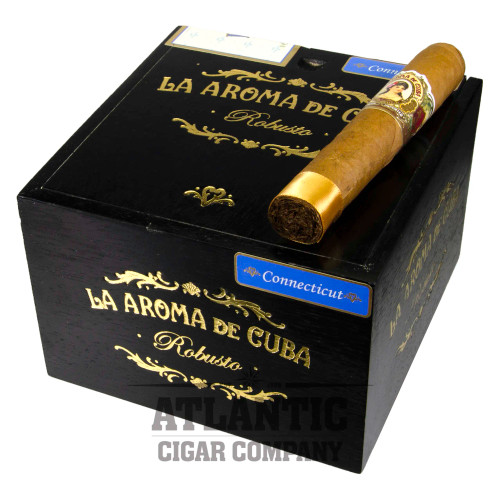
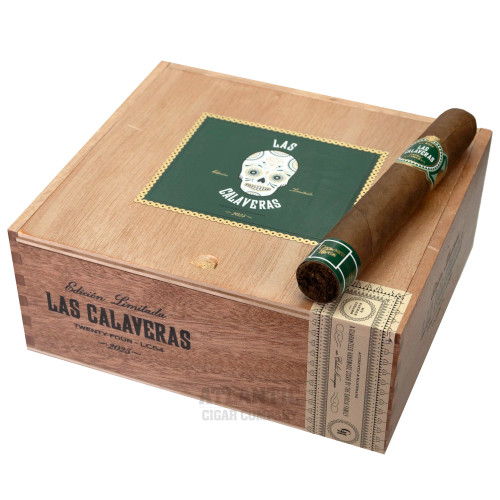
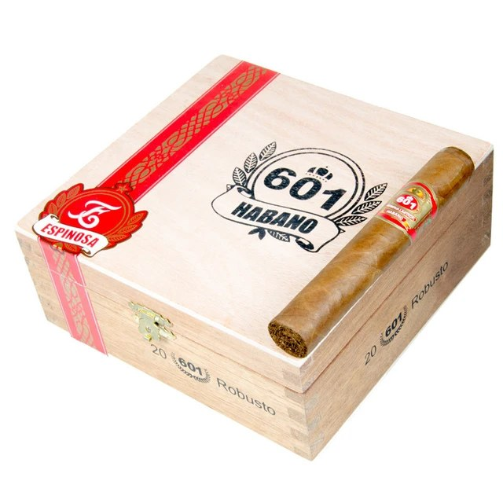
Is there, then, a work that can be called a collaboration between equals? There is. Its representative is La Dueña (2012). Ordinarily the García family blends for Tatuaje; in this one cigar, the positions were reversed — Pete Johnson composed the blend for Janny García, and My Father carried the manufacture and the sale. As the name “La Dueña — the mistress of the house” suggests, it is an offering to the third protagonist within the house (Halfwheel, Cigar Coop).
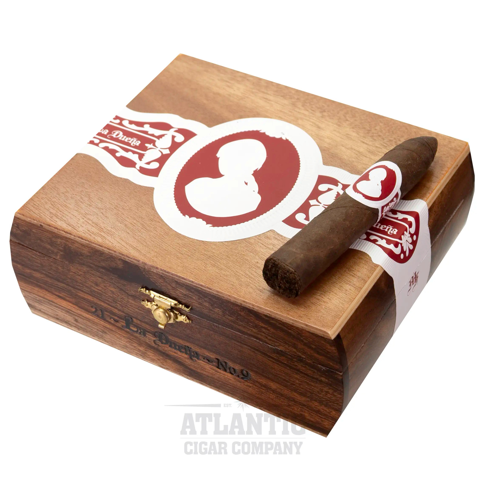
One more tie was born of a friendship between women. In 2012, Janny, together with the Quesada sisters Patricia and Raquel, made “Tres Reynas (Three Queens)” (produced at Quesada's Dominican factory). This friendship bore fruit at the end of 2019, when My Father took over the U.S. rights to Fonseca — the venerable brand founded in Cuba in 1892 — from Quesada. Not a collaboration but an acquisition; and yet the “Fonseca by My Father” it produced (2020), remaking the storied brand using only leaf from the García family's fields, is another summit of joint work (Halfwheel, Cigar Aficionado).
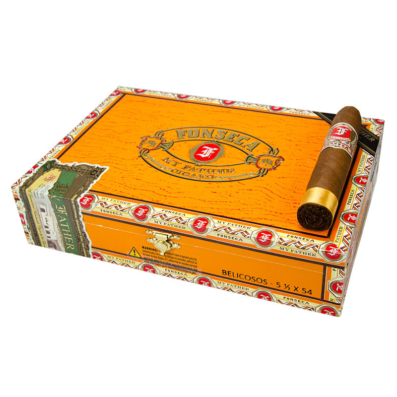
In the introductory copy of some American retailers and the like, AJ Fernandez is sometimes written of as having “studied under Don Pepín.” Some of our readers may have heard the same. So we went to the primary sources. To state the conclusion first: in statements by AJ himself or by the García family, and in the profiles of major media such as Halfwheel and Cigar Aficionado, we could find no passage corroborating a master-disciple relationship. What can be confirmed in reporting about AJ's background is this: in his home province of Pinar del Río he received instruction from Alejandro Robaina, the “god of leaf”; in 2004 he worked for a short time under his kinsman by marriage, Néstor Plasencia; he then began in Estelí from a small factory of six rollers; and the Fusion for Rocky Patel and such were among his early works (Cigar Journal and others). In other words, the two are not master and disciple, but fellow makers who each left the same Cuba and made their way in the same Estelí. To write of them as “rivals from the same homeland” — the preceding house Pepín's, the chasing generation AJ — seems closest to the facts.
As a rival working the same soil, the presence of Padrón looms large. It is the elder house that, as Cuban exiles, put down roots in Miami and Estelí before them, and the counterpart the García family calls “a legendary company” and treats with respect (Jaime's words, Cigar Aficionado). Oliva, and Joya de Nicaragua of Part 3, are also neighbors breathing the same Estelí air. There is no need to fabricate tales of hostility. That exiles each “evolved” the Cuban tradition in their own style — that competition itself created the golden age of the Nicaraguan cigar.
Readers — have you noticed something odd here?
Let us rearrange the faces of Chapter 7 by role. The further forward a maker's name stands on a brand, the more its owner is to be found somewhere else — that was the fascination of this chapter.
| Brand | Owner | Blend | Production | Distribution |
|---|---|---|---|---|
| Tatuaje | Johnson | Johnson + the García family | My Father factory | Tatuaje |
| San Cristobal | Ashton | The García family | My Father factory | Ashton |
| La Aroma de Cuba | Ashton | The García family | My Father factory | Ashton |
| Las Calaveras | Crowned Heads | Crowned Heads + the García family | My Father factory | Crowned Heads |
| 601 | Espinosa | The Espinosa side | García factory → now AJ's factory | Espinosa |
| La Dueña | My Father (Janny) | Johnson | My Father factory | My Father |
| Fonseca by My Father | My Father (U.S. rights acquired in 2019) | The García family | My Father factory | My Father |
| Miami 8&11 (2005–08) | Padilla | Padilla + Pepín | The small Miami workshop (at the time) | Padilla |
Take La Aroma de Cuba and San Cristobal: “Ashton's brands, the García family's works.” On the shop shelf they are often called by the maker's name, but the trademarks and the selling belong to Ashton. La Dueña alone is the reverse: owner and distribution with the García family, and only the blend entrusted outside.
◆ Chapter 8 — What You Can Actually Buy: Prices at Shops That Ship to Japan
The following were confirmed on November 8, 2026, on the product pages of retailers that ship to Japan, for price and stock (shipping and duties extra. Converted at $1 = ¥158.5).
Le Bijou 1922 Torpedo Box Pressed (Box of 20)
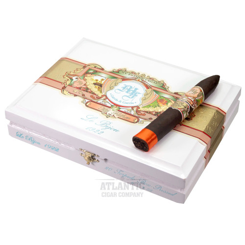
$221.00 (approx. ¥35,000) / approx. ¥1,750 per cigar (15% off list price $260.00) · in stock (verified) Atlantic Cigar product page ▶
The Judge Grand Robusto (Box of 20)
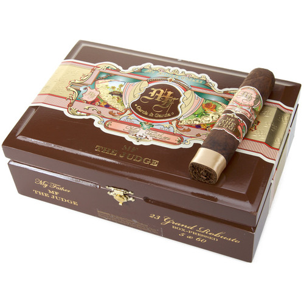
$231.20 (approx. ¥36,600) / approx. ¥1,830 per cigar (15% off list price $272.00) · in stock (verified) Atlantic Cigar product page ▶
Flor de las Antillas Toro (Box of 20)
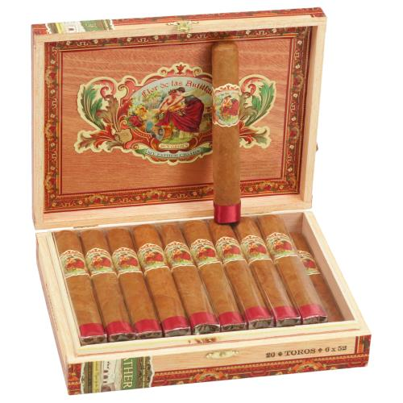
$161.95 (approx. ¥25,700) / approx. ¥1,280 per cigar · in stock (verified) (singles also available at $8.55, approx. ¥1,350) Neptune Cigar product page ▶
Don Pepín García Blue Label Invictos (Box of 20)
$164.00 (approx. ¥26,000) / approx. ¥1,300 per cigar (18% off list price $200.00) · in stock (verified) Atlantic Cigar product page ▶
La Antigüedad Toro (Box of 20)
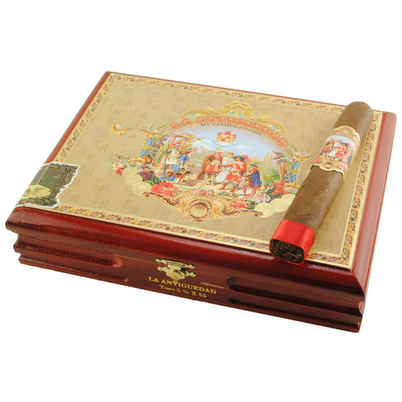
$163.20 (approx. ¥25,900) / approx. ¥1,290 per cigar (15% off list price $192.00) · in stock (verified) Atlantic Cigar product page ▶
La Opulencia Robusto Box Pressed (Box of 20)
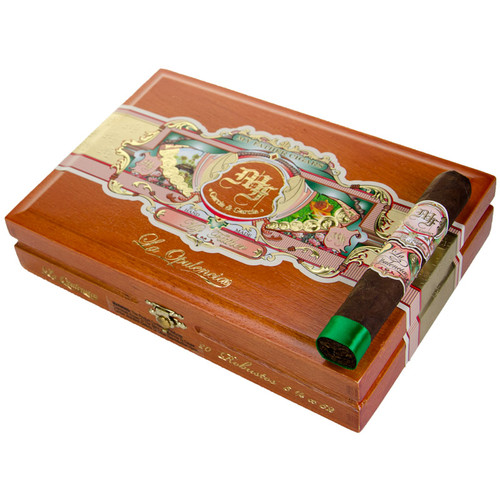
$188.70 (approx. ¥29,900) / approx. ¥1,500 per cigar (15% off list price $222.00) · in stock (verified) Atlantic Cigar product page ▶
◆ Chapter 9 — Closing: A Father's Name Is a Family's Promise
He began rolling at eleven, left his country at fifty, and raised over a small workshop's door the sign “King of the Habanos.” His son made him a cigar named “My Father” in secret, and he in turn offered “the Jewel” to his own father. In every My Father line there is a “cigar for someone.” That, we think, is why a private warmth remains in the flavor.
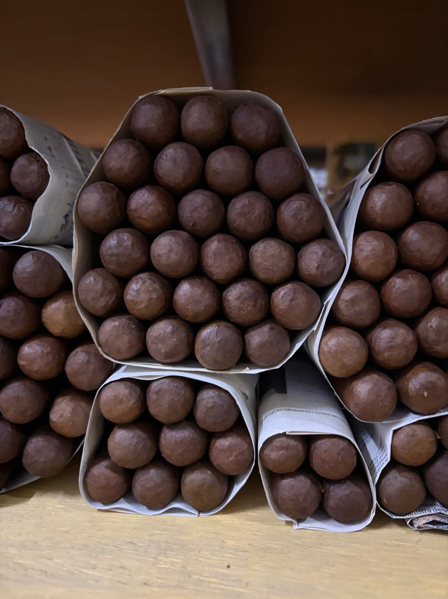
“The great house that evolved the Cuban tradition in Nicaragua.” The craft nurtured on Cuba's rolling floors crossed the sea in the form of exile, made its name in America, and took on a new shape in Nicaragua's soil and leaf. A tradition does not survive by being merely kept. Only those who evolve it can hand it to the next generation — the path of this family, three generations working in the same factory, proves exactly that. Next time you pick up a My Father, look a little longer at the father's face on the band.
My Father No. 1 Robusto

Don Pepín García (Blue Label)
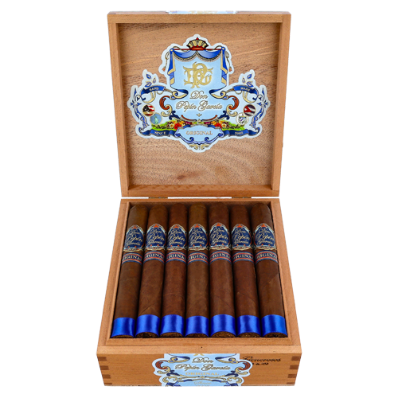
Flor de las Antillas Toro
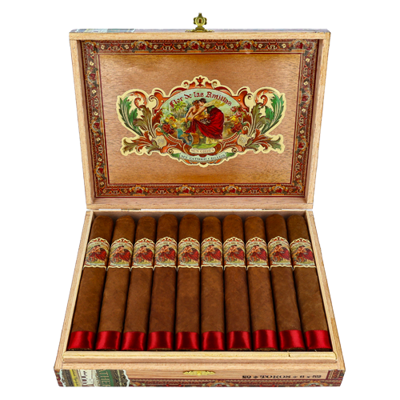
Le Bijou 1922 Torpedo Box Pressed
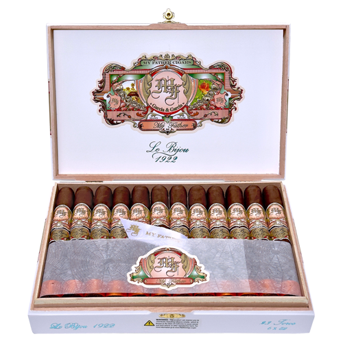
The Judge Grand Robusto
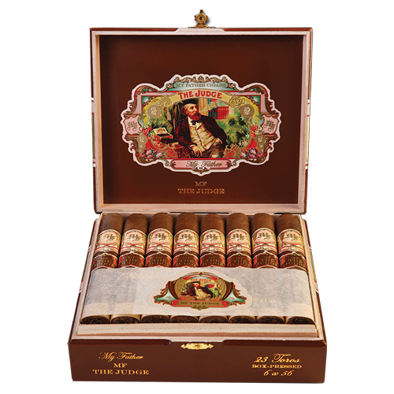